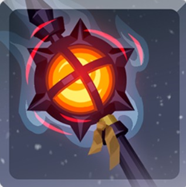
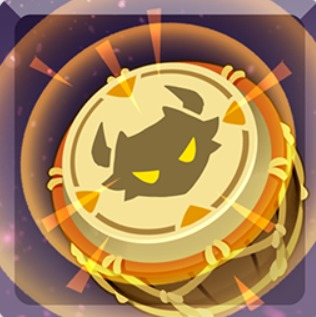

COMO MONTAR SEU DECK DE PLAGUE
Carta Principal (Aflição) + 1 Apoio + 1 Suporte

Thriving Plague
1 a 3 Partes
Obrigatória. Espalha praga infecciosa contínua. Focar em poucos alvos.

Sands of Time
Padrão / Melhor Geral
Acelera e prolonga a frequência e os ticks de dano da aflição.

Radioactivity
Buff Duração / Chance
Radiação contínua por segundo. Ideal quando há bônus de duração.

Blazing Inferno
Buff de Dano
Fogo contínuo. Usar com bônus de dano de aflição na raid.

Amplify
Potencializa Aflição
Amplifica diretamente a força das aflições ativas no alvo.

Insanity Void
Contra Corpo
Bônus massivo de aflição concentrado em partes sem armadura.

Skeletal Smash
Contra Armadura
Suporte de ativação focada para perfurar armaduras resistentes.
Regras Táticas do Deck de Plague:
• Foco: Bater estritamente em 1 a 3 partes para não espalhar o dano em excesso.• Suporte: Escolha Void para dano direto no corpo ou Smash contra armadura.
• Apoio: Sands of Time é o padrão; troque por Inferno ou Radio conforme o buff do ciclo.
COMO MONTAR SEU DECK DE FOGUETES
Carta Principal (Explosão) + 1 Apoio + 1 Suporte

Clanship Barrage
Qualquer Parte
Obrigatória. Dispara foguetes pesados do navio. Usar com Explosão e Suporte.

Mirror Force
Uso Geral / Qualquer Parte
Ganha bônus de dano progressivo a cada ciclo de raid em que for usada.

Barbed Morningstar
Corpo ou Armadura
Bater no corpo com 5 armaduras ativas, ou na armadura com 5 partes vivas sem armadura.

Fragmentize
Armadura Amaldiçoada
Dano aumentado contra partes protegidas por armadura e maldições.

Flak Shot
Armadura c/ Peças Expostas
Disparos de estilhaços espalhados por múltiplos alvos protegidos por armadura.

Ancestral Favor
Todo o Titã
Buff global que eleva a chance e o poder de ativação dos golpes de explosão.

Guard Break
Foco Direto
Potencializa o dano direto na parte atacada quando há partes destruídas.
Regras Táticas do Deck de Foguetes:
• Sinergia: Clanship Barrage precisa ser combinado com 1 carta de Explosão e 1 Suporte.• Apoio de Explosão: Mirror Force é ideal para uso geral; use Frag ou Flak contra armaduras.
• RESTRIÇÃO CRÍTICA: Não use Flak Shot acompanhado de Guard Break!
COMO MONTAR SEU DECK DE PURIFY
Carta Principal (Explosão) + 1 Apoio (Aflição) + 1 Suporte

Purifying Blast
2 ou 3 Partes
Obrigatória. Detona os acúmulos de aflição ativos. Usar com Aflição e Suporte.

Ravenous Swarm
Raids de Explosão
Enxame voraz. Aplica aflições rápidas para carregar a detonação de Purify.
Amplify
Raids de Explosão
Amplifica o dano e a frequência das aflições base.

Electro Zap
Raids de Aflição
Excelente ativador de aflição rápida para acumular stacks de Purify.

Radiant Kaleidoscope
Híbrido Geral
Suporte excelente para potencializar decks de Explosão combinados com Aflição.

Battle Drums
Foco em Membros
Tambores de combate que aceleram a cadência e dano nos membros do Titã.
Insanity Void
Contra Corpo
Bônus massivo para detonar acúmulos de aflição diretamente no corpo do Titã.
Skeletal Smash
Contra Armadura
Suporte focado em quebrar armadura para abrir caminho para os ataques de Purify.
Regras Táticas do Deck de Purify:
• Mecânica: Purifying Blast requer cartas de Aflição ativas no alvo para causar dano real. Bater em 2 ou 3 partes.• Apoio por Buff: Use Ravenous ou Amplify se a raid favorecer explosão; use Zap se favorecer aflição.
• Suporte: Escolha Void para foco no corpo, Smash contra armadura, ou Radiant/Drums para amplificação contínua.